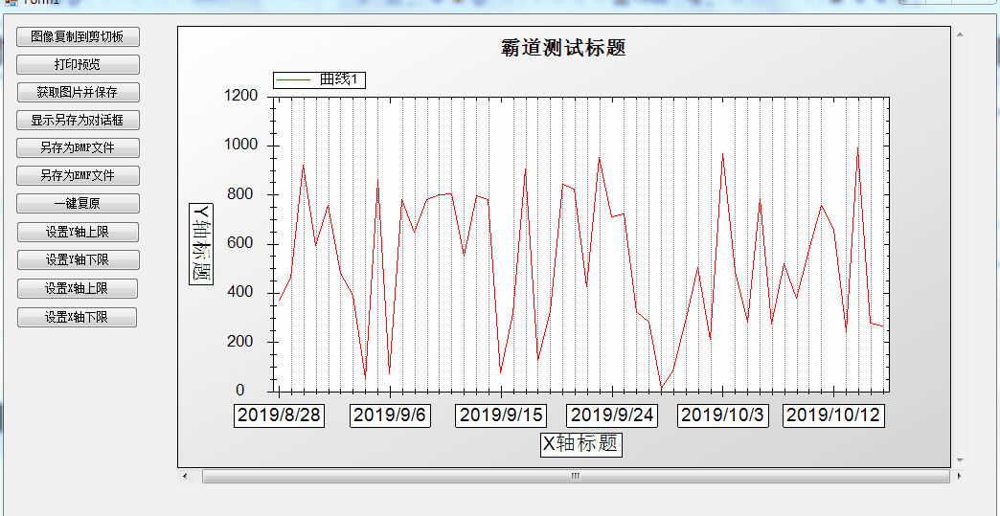

Winforn中设置ZedGraph曲线图的属性、坐标轴属性、刻度属性：
https://blog.csdn.net/BADAO_LIUMANG_QIZHI/article/details/100112573
在上面实现曲线相关属性的设置的基础上，要能修改曲线图的X轴以及Y轴的上限和下限。

拖拽按钮，双击进入其点击事件
private void button8_Click(object sender, EventArgs e)
{
myPane.YAxis.Scale.Max = 1500;
//更新图表
zedGraphControl1.Invalidate();
}
拖拽按钮，双击进入其点击事件
private void button9_Click(object sender, EventArgs e)
{
myPane.YAxis.Scale.Min = -1500;
//更新图表
zedGraphControl1.Invalidate();
}
拖拽按钮，双击进入其点击事件
private void button10_Click(object sender, EventArgs e)
{
myPane.XAxis.Scale.Max = 60;
//更新图表
zedGraphControl1.Invalidate();
}
拖拽按钮，双击进入其点击事件
private void button11_Click(object sender, EventArgs e)
{
myPane.XAxis.Scale.Min = -5;
//更新图表
zedGraphControl1.Invalidate();
}
using System;
using System.Collections.Generic;
using System.ComponentModel;
using System.Data;
using System.Drawing;
using System.Linq;
using System.Text;
using System.Threading.Tasks;
using System.Windows.Forms;
using ZedGraph;
namespace ZedGraphTest
{
public partial class Form1 : Form
{
GraphPane myPane = new GraphPane();
public Form1()
{
InitializeComponent();
//Form1初始化后创建设置控件的方法并将当前ZedGraph控件传递
createPane(zedGraphControl1);
}
//需要引入命名空间--using ZedGraph;
public void createPane(ZedGraphControl zgc)
{
myPane = zgc.GraphPane;
//设置图表标题 和 x y 轴标题
myPane.Title.Text = "霸道测试标题";
myPane.XAxis.Title.Text = "X轴标题";
myPane.YAxis.Title.Text = "Y轴标题";
//更改标题的字体
FontSpec myFont = new FontSpec("Arial",16,Color.Black,false,false,false);
myPane.XAxis.Title.FontSpec = myFont;
myPane.YAxis.Title.FontSpec = myFont;
// 造一些数据，PointPairList里有数据对x，y的数组
Random y = new Random();
PointPairList list1 = new PointPairList();
for (int i = 0; i < 50; i++)
{
double x = i;
double y1 = y.NextDouble() * 1000;
list1.Add(x, y1); //添加一组数据
}
// 用list1生产一条曲线，标注是“曲线1”
//SymbolType，枚举代表曲线的样式
//Square = 0,
//Diamond = 1,
//Triangle = 2,
//Circle = 3,
//XCross = 4,
//Plus = 5,
//Star = 6,
//TriangleDown = 7,
//HDash = 8,
//VDash = 9,
//UserDefined = 10,
//Default = 11,
//None = 12,
LineItem myCurve = myPane.AddCurve("曲线1", list1, Color.Red, SymbolType.None);
//填充图表颜色
myPane.Fill = new Fill(Color.White, Color.LightGray, 45.0f);
//以上生成的图标X轴为数字，下面将转换为日期的文本
string[] labels = new string[50];
for (int i = 0; i < 50; i++)
{
labels[i] = System.DateTime.Now.AddDays(i).ToShortDateString();
}
#region 坐标轴属性设置
//X轴类型
myPane.XAxis.Type = AxisType.Text;
//显示小刻度 是false则看不到效果
myPane.XAxis.MinorGrid.IsVisible = true;
//线的颜色
myPane.XAxis.Color = Color.Black;
//点线中点与点之间的间隔
myPane.XAxis.MinorGrid.DashOff = 1f;
//点线中点的长度
myPane.XAxis.MinorGrid.DashOn = 1f;
//画笔宽度
myPane.XAxis.MinorGrid.PenWidth = 1f;
//
#endregion
#region 坐标轴上刻度线设置
//X轴文本取值
myPane.XAxis.Scale.TextLabels = labels;
//第一个刻度从哪里开始
myPane.XAxis.Scale.BaseTic = 1;
//刻度值的字体属性
myPane.XAxis.Scale.FontSpec = myFont;
#endregion
//画到zedGraphControl1控件中，此句必加
zgc.AxisChange();//在数据变化时绘图
//更新图表
zedGraphControl1.Invalidate();
//重绘控件
Refresh();
#region 属性设置
//是否允许横向缩放
this.zedGraphControl1.IsEnableHZoom = true;
//是否允许纵向缩放
this.zedGraphControl1.IsEnableVZoom = true;
//是否允许缩放
this.zedGraphControl1.IsEnableZoom = true;
//是否显示右键菜单
this.zedGraphControl1.IsShowContextMenu = true;
//复制图像时是否显示提示信息
this.zedGraphControl1.IsShowCopyMessage = true;
//鼠标在图表上移动时是否显示鼠标所在点对应的坐标 默认为false
this.zedGraphControl1.IsShowCursorValues = true;
//是否显示横向滚动条
this.zedGraphControl1.IsShowHScrollBar = true;
//是否显示纵向滚动条
this.zedGraphControl1.IsShowVScrollBar = true;
//鼠标经过图表上的点时是否显示该点所对应的值 默认为false
this.zedGraphControl1.IsShowPointValues = true;
//使用滚轮时以鼠标所在点为中心进行缩放还是以图形中心进行缩放
//this.zedGraphControl1.IsZoomOnMouseCenter = true;
#endregion
//修改右键为中文菜单
this.zedGraphControl1.ContextMenuBuilder += MyContextMenuBuilder;
}
private void zedGraphControl1_Load(object sender, EventArgs e)
{
}
/// <summary>
/// 打印预览
/// </summary>
/// <param name="sender"></param>
/// <param name="e"></param>
private void button1_Click(object sender, EventArgs e)
{
this.zedGraphControl1.DoPrintPreview();
}
//复制到剪切板
private void button2_Click(object sender, EventArgs e)
{
//ture代表复制成功提示
this.zedGraphControl1.Copy(true);
}
/// <summary>
/// 获取图片并保存
/// </summary>
/// <param name="sender"></param>
/// <param name="e"></param>
private void button3_Click(object sender, EventArgs e)
{
//获取图像
Image image = this.zedGraphControl1.GetImage();
//保存照片吗，指定保存路径
image.Save(@"C:\Users\HAOHAO\Desktop\1.png");
//弹窗提示
MessageBox.Show("保存成功");
}
/// <summary>
/// 显示另存为对话框
/// </summary>
/// <param name="sender"></param>
/// <param name="e"></param>
private void button4_Click(object sender, EventArgs e)
{
this.zedGraphControl1.SaveAs();
}
/// <summary>
/// 另存为BMP文件
/// </summary>
/// <param name="sender"></param>
/// <param name="e"></param>
private void button5_Click(object sender, EventArgs e)
{
this.zedGraphControl1.SaveAsBitmap();
}
/// <summary>
/// 另存为EMF文件
/// </summary>
/// <param name="sender"></param>
/// <param name="e"></param>
private void button6_Click(object sender, EventArgs e)
{
this.zedGraphControl1.SaveAsEmf();
}
/// <summary>
/// 一键复原
/// </summary>
/// <param name="sender"></param>
/// <param name="e"></param>
private void button7_Click(object sender, EventArgs e)
{
//一键复原缩放
this.zedGraphControl1.ZoomOutAll(myPane);
}
//右击菜单变中文
private static void MyContextMenuBuilder(ZedGraphControl control, ContextMenuStrip menuStrip,
Point mousePt, ZedGraphControl.ContextMenuObjectState objState)
{
foreach (ToolStripMenuItem item in menuStrip.Items)
{
switch (item.Name)
{
case "copied_to_clip":
item.Text = @"复制到剪贴板";
break;
case "copy":
item.Text = @"复制";
break;
case "page_setup":
item.Text = @"页面设置...";
break;
case "print":
item.Text = @"打印...";
break;
case "save_as":
item.Text = @"另存图表...";
break;
case "set_default":
item.Text = @"恢复默认大小";
break;
case "show_val":
item.Text = @"显示节点数值";
break;
case "title_def":
item.Text = @"标题";
break;
case "undo_all":
item.Text = @"还原缩放/移动";
break;
case "unpan":
item.Text = @"还原移动";
break;
case "unzoom":
item.Text = @"还原缩放";
break;
case "x_title_def":
item.Text = @"X 轴";
break;
case "y_title_def":
item.Text = @"Y 轴";
break;
}
}
}
private void button8_Click(object sender, EventArgs e)
{
myPane.YAxis.Scale.Max = 1500;
//更新图表
zedGraphControl1.Invalidate();
}
//设置Y轴下限
private void button9_Click(object sender, EventArgs e)
{
myPane.YAxis.Scale.Min = -1500;
//更新图表
zedGraphControl1.Invalidate();
}
/// <summary>
/// 设置X轴上限
/// </summary>
/// <param name="sender"></param>
/// <param name="e"></param>
private void button10_Click(object sender, EventArgs e)
{
myPane.XAxis.Scale.Max = 60;
//更新图表
zedGraphControl1.Invalidate();
}
/// <summary>
/// 设置X轴下限
/// </summary>
/// <param name="sender"></param>
/// <param name="e"></param>
private void button11_Click(object sender, EventArgs e)
{
myPane.XAxis.Scale.Min = -5;
//更新图表
zedGraphControl1.Invalidate();
}
}
}